Big Honking Button Kit Build Guide
Welcome to the build guide for the Big Honking Button! We hope you have a great time putting this module together and a wonderful time using it.
Please read all instructions thoroughly before starting. If you have questions or run into trouble please reach out to us on discord or drop us an email at support@winterbloom.com
This build is a beginner level kit. Some soldering experience is helpful but not required. If it's your first time soldering we recommend reading through Adafruit's guide to excellent soldering. This build takes around two hours to complete.
Tools and materials required#
Before jumping in, make sure you have:
- A soldering iron, like this one
- Solder, we can recommend Adafruit's 60/40 no-clean rosin core solder. We suggest using soldering with "no clean" flux. If you do use a different kind of flux, be sure to carefully clean the flux residue off based on the guidelines provided by the manufacturer of your solder.
- A lighter, candle, or some other heat source for the shrink wrap. A hot air station is ideal, not not necessary.
Kit contents#
Your kit should contain the following items. If any are missing please email us at support@winterbloom.com.
- (1) Panel
- (1) SANWA arcade button
- (1) Big Honking Button mainboard
- (1) Button wiring harness
- (2) Short pieces of heat-shrink tubing
- (1) 10-pin Eurorack power connector (black)
- (1) 2-pin JST header (green)
- (4) 1/8" jacks
- (4) Hex nuts for the 1/8" jacks
- (1) Retaining ring (colors vary)
- (1) Rubber band
- (1) Eurorack power cable
- (2) M3 screws for attaching the module to your rack
We program, test, and calibrate the mainboard before sending it to you, so you don't have to worry about any of that- once you're done building you'll be good to go!
Soldering the jacks
The first step is to solder the 1/8" jacks on to the mainboard.

Place the jacks onto the front side of the board. The front side has the outline of the jacks printed on it, so it should be easy to spot!

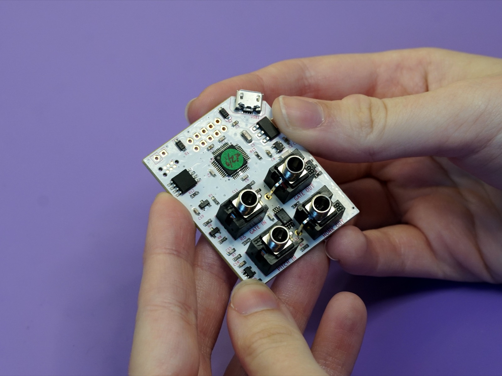
Once the jacks are placed, you can use the panel to hold them in place while soldering them. Place the panel over the top of the jacks:
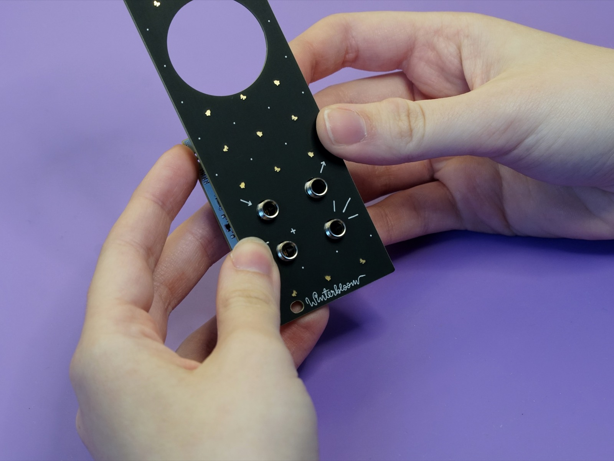
The use the rubber band to hold the panel onto the jacks and board. Place it between the two rows of jacks.

Double (or triple) it over to make sure it's taut.
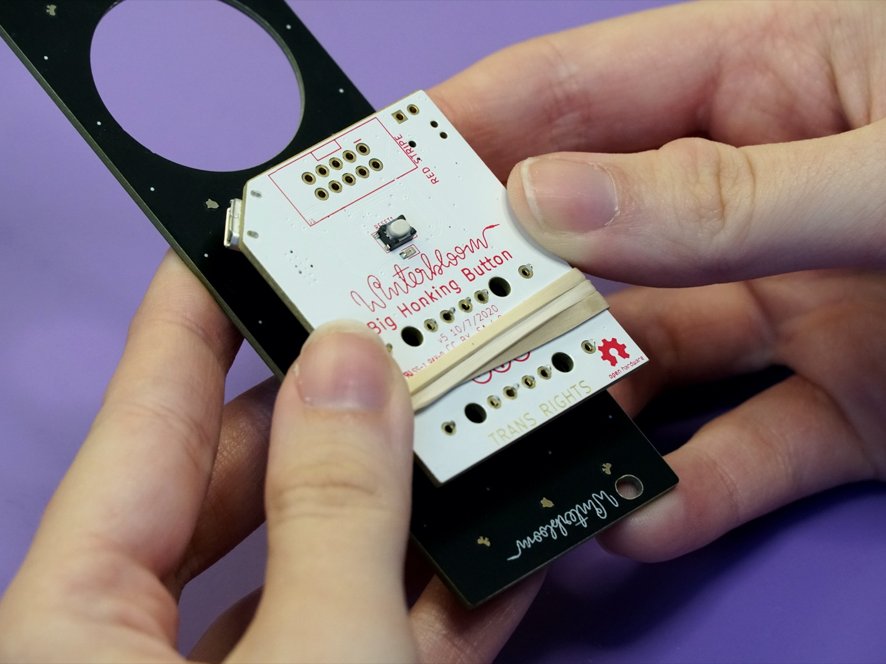
Tip
Make sure that the jacks are flush against the board before soldering. You can double-check after each solder joint and adjust them if necessary.
Now you can solder each of the pins from the jacks to the board. Take care not to burn the rubber band.

There are three solder joints per jack for a total of twelve.

Soldering the JST connector
Next you'll need to solder the green JST connector to the PCB.
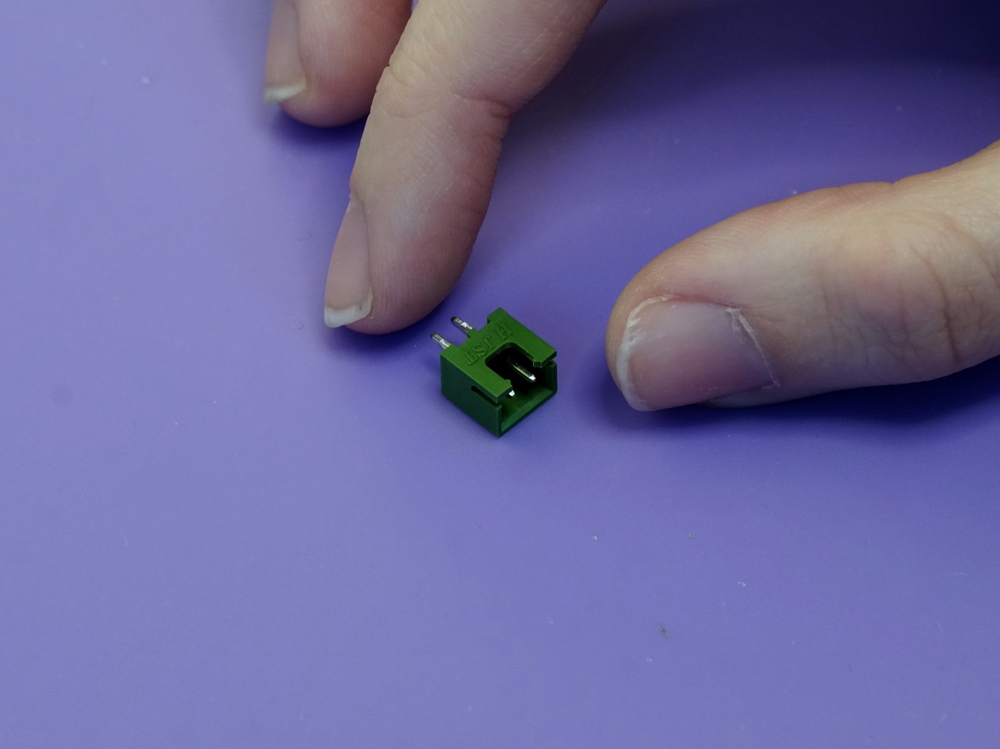
Unlike the jacks, The JST connector goes on the back side of the board, next to where the power header goes.

Pay special attention to the orentation of the JST connector. It only goes on correctly one way- It shouldn't be overhanging the board, it should come right up to the edge.


Just like with the 1/8" jacks, flip the board over and solder the two pins of the JST connector to the board. Make sure the connector is flush with the board after making the first solder joint. If needed, you can use a piece of tape to hold it in place.
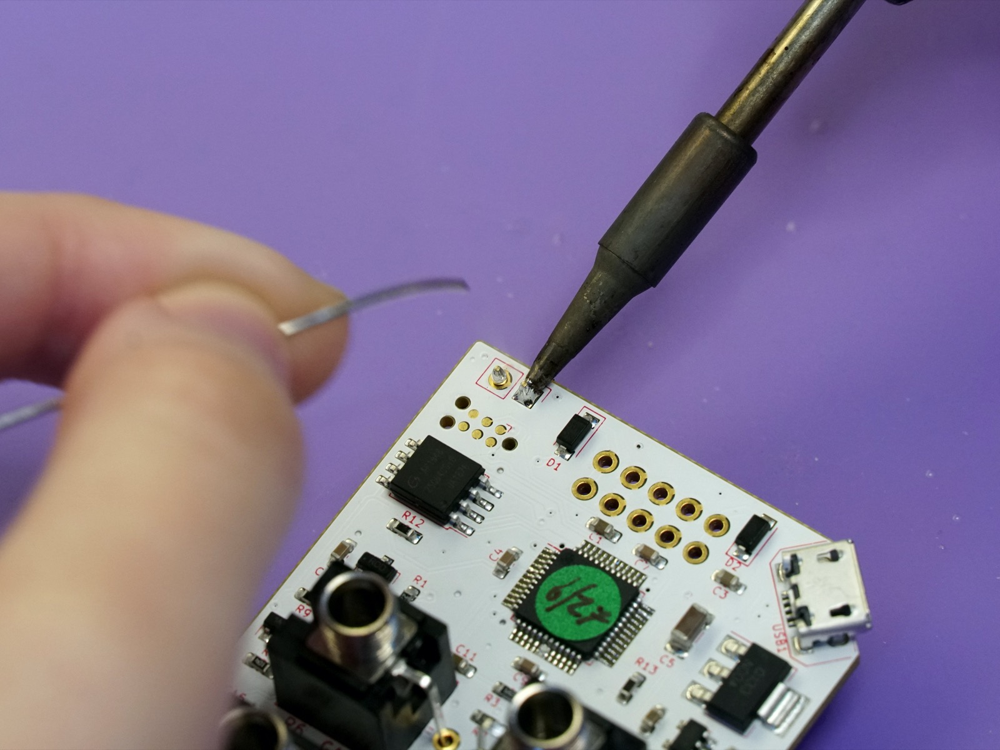
Soldering the power connector#
Next up is the 10-pin Eurorack power connector.
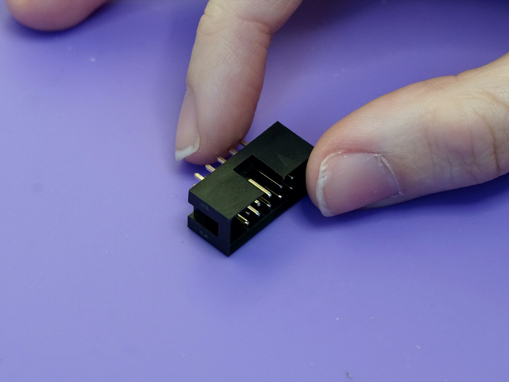
The power connector also goes on the back side of the board. When placing note the notch in the outline on the board. You'll need to make sure the slot on the connector matches where the notch is on the outline. The slot should be facing the edge of the board.

Once placed you can solder the 10 pins on the other side of the board. Be careful here and avoid touching the small components near the pins with your iron. Check and make sure the connector is flush with the board as you go.


Soldering the wire harness to the button#
Set the board aside for a moment because the next step is to attach the wire harness to the button. You'll need the button, wire harness, and the two small pieces of heat shrink tubing.
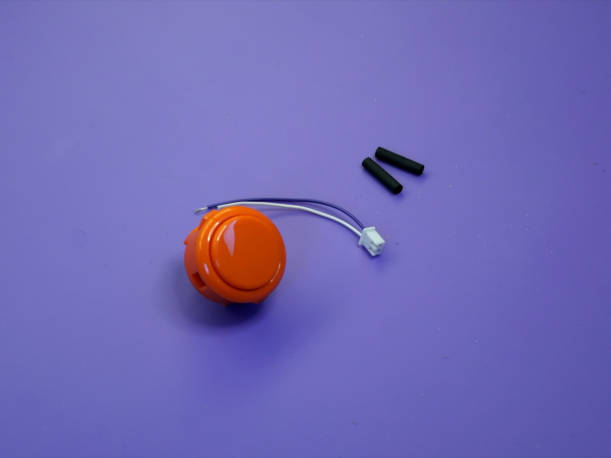
First, place the two pieces of heat-shrink tubing onto the two wires on the wire harness. Push them all the way to the white connector for now.

Carefully solder the wires from the harness onto the lugs on the button one at a time. You may need to get a friend to hold the button for you to keep it from moving around. Make sure the heat-shrink tubing stays on the wires.
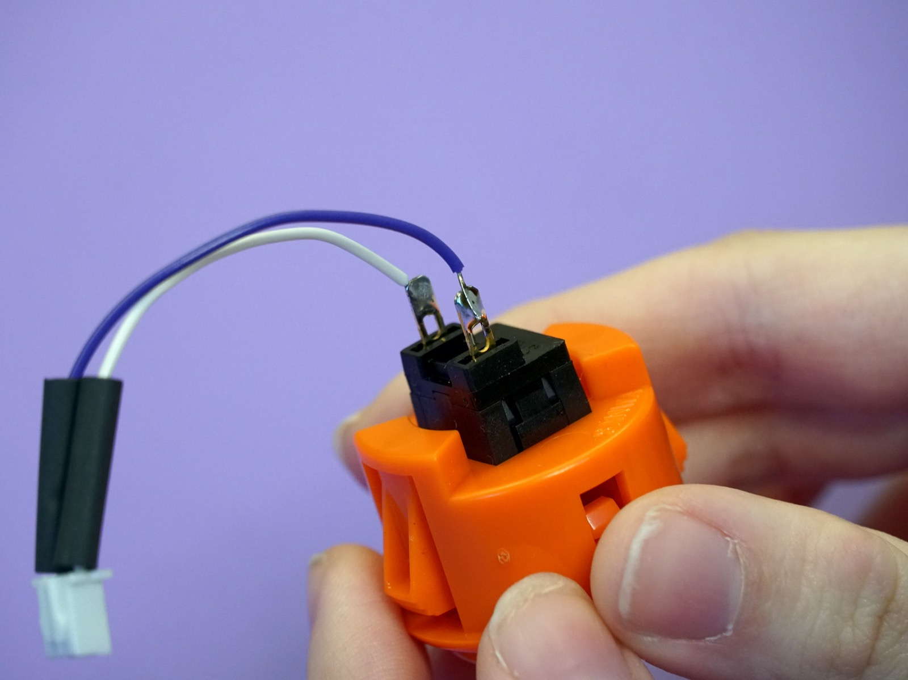
Now you can push the heat-shrink tubing over the solder joints and the lugs to cover the connections. Use your lighter, candle, hot air station to shrink the tubing over the connectors.
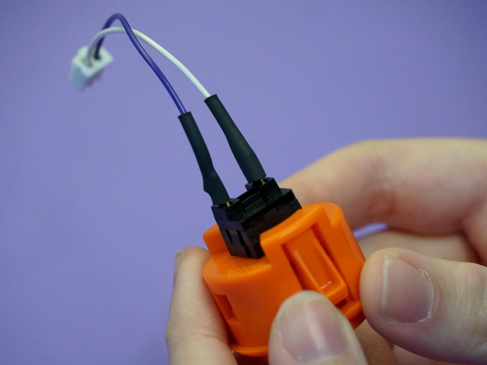
Careful
The heat shrink will not completely shrink around the wire side so do not apply excess heat - you can melt the wire's sleeving. If using a hot air station set the temperature to no higher than 150°C.
Putting the button in the panel#
All of the soldering is complete! You can put away the soldering iron.
The next step it to place the button snugly into the panel. Push the wires through the big hole in the panel:

Then push the button into the hole - it should snap into place.
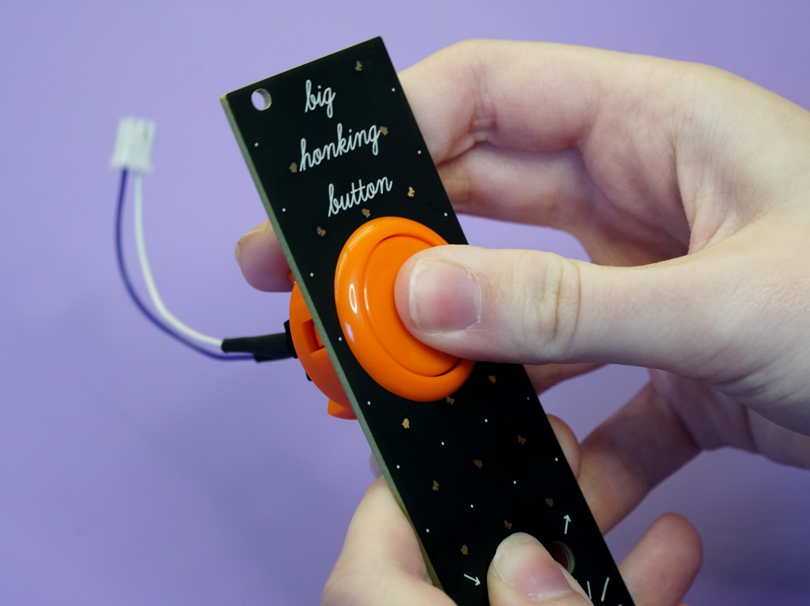
Flip the panel over so that you can see the back part of the button and grab the small plastic retaining ring. Note that your ring might be a different color:

Slip the ring over the wires:
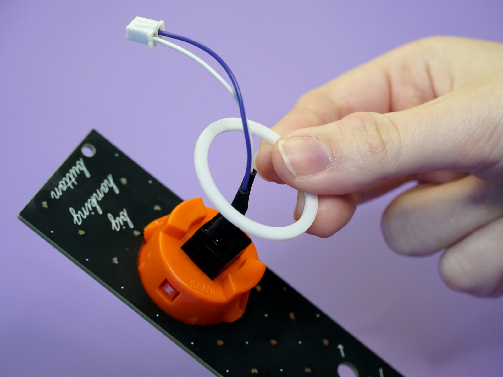
And then push the ring firmly over the button. It should click into place with a satisfying snap and the button should now be snug as a bug in a rug.
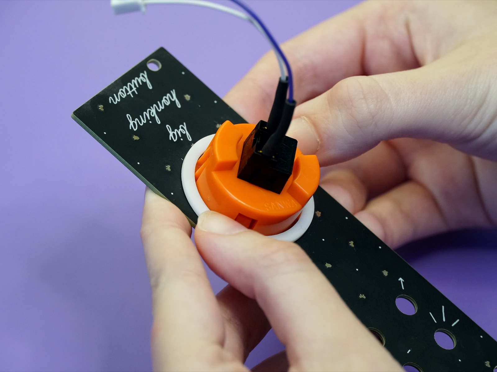
Secure the panel#
Now that the button is in place you can secure the panel to the mainboard. Just like you did when soldering on the jacks, place the panel over the jacks and push them through the panel:

Now take the hex nuts and screw them onto the jacks:
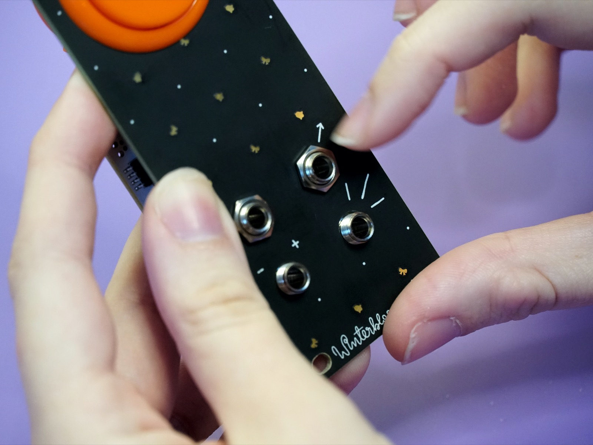
Don't over-tighten - finger tight is generally good enough.
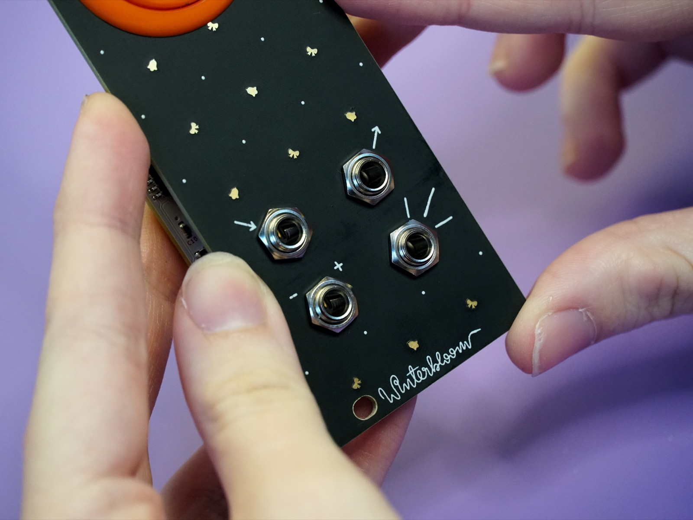
Connect the button#
Now you can connect the button's white connector to the green JST header on the board. Place it so that the tab on the connector matches the notch in the header and push it into place:

Make sure to push the connector all the way in. It should snap in and hold in place.
All done#
Congratulations! You've finished your very own Big Honking Button!

Now that it's all put together go check out the User's Guide and please show us your work by tweeting at @wntrblm or tagging @wntrblm in your instagram post.